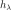

Box Cox transformation¶
 a
multivariate stochastic process of dimension
a
multivariate stochastic process of dimension  where
where
 and is an event. We
suppose that the process is .
and is an event. We
suppose that the process is . defined by
defined by
 .
. , the Box Cox transformation maps the process
, the Box Cox transformation maps the process
 into the process
into the process  such that the variance of
is constant (at the first order at least) with
respect to .
such that the variance of
is constant (at the first order at least) with
respect to .the estimation of the Box Cox transformation from a given field of the process
,the action of the Box Cox transformation on a field generated from
.
 the Box Cox
transformation which maps the process into the process
, where
, such that is independent of
at the first order.. To verify that constraint, it may be needed to
consider the shifted process .
the Box Cox
transformation which maps the process into the process
, where
, such that is independent of
at the first order.. To verify that constraint, it may be needed to
consider the shifted process . in the
scalar case (=1), using the Taylor development of
at the mean point of
. around
writes:
in the
scalar case (=1), using the Taylor development of
at the mean point of
. around
writes:which leads to:
and then:
To have constant with respect to
at the first order, we need:
(1)¶
Now, we make some additional hypotheses on the relation between and :
If we suppose that , then (1) leads to the function and we take ;
If we suppose that , then (1) leads to the function and we take ;
More generally, if we suppose that , then (1) leads to the function  parametrized by the scalar
 :
:(2)¶
where .
The inverse Box Cox transformation is defined by:
(3)¶
is estimated from a given field of the
process as follows. given below is optimized in the case
when  at
each vertex . If it is not the case, that estimation
can be considered as a proposition, with no guarantee., we have:
at
each vertex . If it is not the case, that estimation
can be considered as a proposition, with no guarantee., we have:(4)¶
from which we derive the density probability function  of
for all vertices :
of
for all vertices :
(5)¶
Using (5), the likelihood of the values with respect to the model (4) writes:
(6)¶
We notice that for each fixed , the likelihood equation
is proportional to the likelihood equation which estimates
. Thus, the maximum likelihood estimator for
for a given
are:
(7)¶
(8)¶
where  is a constant.
is a constant.
The parameter is the one maximizing defined in (8).
API:
See
BoxCoxTransformSee
BoxCoxFactory
Examples: